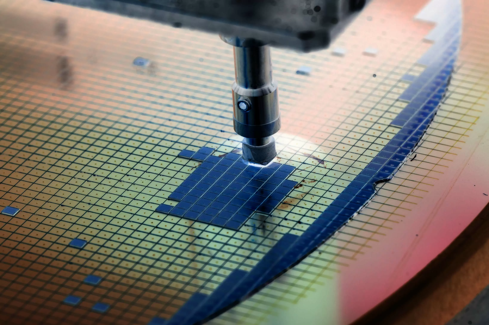
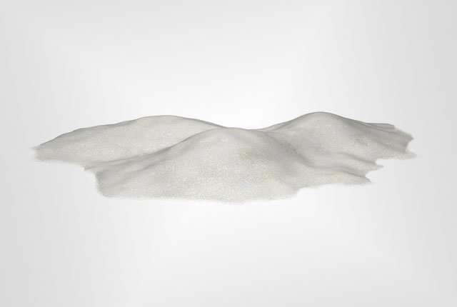

Manufacture of a Processor
step1 start with silicon
The process of creating a computer chip begins with a type of sand called silica sand, which is comprised of silicon dioxide.
Silicon is the base material for semiconductor manufacturing and must be pure before it can be used in the manufacturing process.